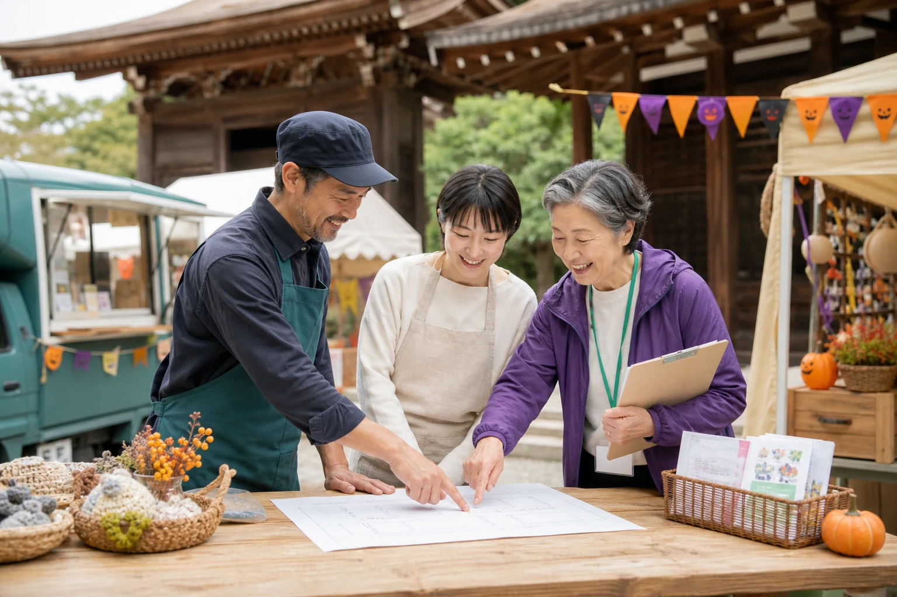
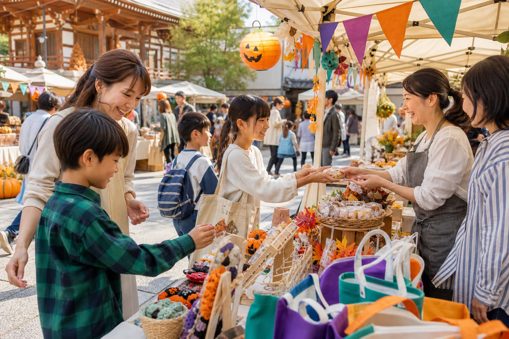

01
FOOD & DRINK
キッチンカー
・飲食系
キッチンカー、飲食の販売、手作り菓子・加工品の販売など
出店料3,000円
出店台数：5台まで
Instagram DMで申込む →WHY JOIN US?
子どもたちの学び、地域の交流、多世代のつながりを育む祭りです。お店や活動の魅力を届けながら、春日井の新しい縁を一緒につくります。
ENTRY CATEGORY
01
FOOD & DRINK
キッチンカー、飲食の販売、手作り菓子・加工品の販売など
出店台数：5台まで
Instagram DMで申込む →02
MARKET & CRAFT
雑貨・ハンドメイド、農産品、ワークショップなど
03
WELFARE
福祉事業所・団体の出店、自主製品の販売や体験など

※写真はAI生成によるイメージです
MAKE IT TOGETHER
会場は地域に親しまれる泰岳寺。飲食・物販・体験・福祉、それぞれの得意を持ち寄って、子どもから大人まで楽しめる場をつくります。
HOW TO APPLY
物販・福祉関係事業所
スマートフォンのカメラでQRコードを読み取り、必要事項を入力して送信してください。
直接URLは元資料に未掲載のため、QRからアクセスしてください。キッチンカー・飲食系
@kasugai.fes
出店希望の旨をDMでお知らせください。担当者から詳細をご案内します。
Instagramを開く ↗ Instagramの外部ページへ移動します。2026年9月15日（火）まで
ENTRY FLOW
飲食・物販・福祉から当てはまる募集内容を確認。
専用フォーム、またはInstagram DMから応募。
出店可否や当日の詳細は、申込後に主催者から連絡します。
2026年10月31日、泰岳寺で一緒にまちを盛り上げましょう。

※写真はAI生成によるイメージです
EVENT INFORMATION
BEFORE ENTRY
春日井が好きな方なら、個人・団体・事業者を問わず応募できます。
雨天時は内容変更、または中止となる場合があります。
近隣企業と連携して確保する予定です。詳細は申込後に案内されます。
区画寸法、搬入時間、電源・給排水、キャンセル条件等は主催者へご確認ください。
FAQ
はい。春日井が好きな方であれば、個人・団体・事業者を問わず応募できます。
はい。キッチンカー・飲食系はInstagram DM、物販・福祉関係事業所は専用フォームQRからお申込みください。
元資料には記載がありません。申込後の案内、または事務局への問い合わせでご確認ください。
内容変更、または中止となる場合があります。最新情報は主催者からの案内をご確認ください。
JOIN THE FESTIVAL
たくさんのご応募をお待ちしています。